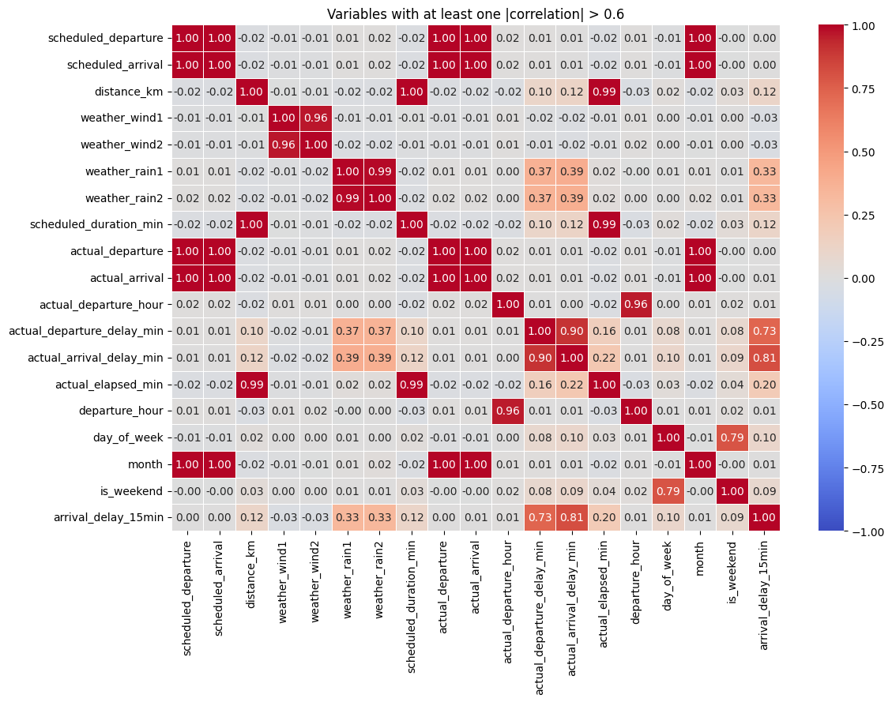
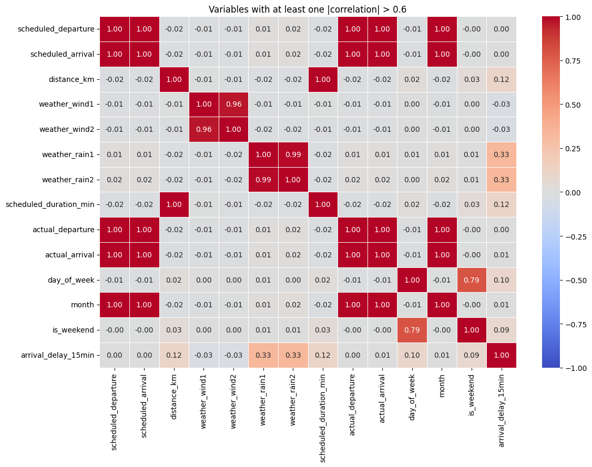
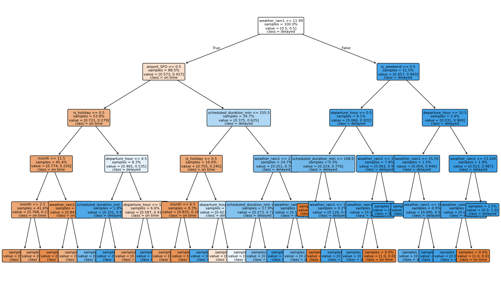

| scheduled_departure | scheduled_arrival | carrier | origin | destination | distance_km | weather_wind1 | weather_wind2 | weather_rain1 | weather_rain2 | noise_1 | noise_2 | noise_3 | scheduled_duration_min | actual_departure | actual_arrival | |
|---|---|---|---|---|---|---|---|---|---|---|---|---|---|---|---|---|
| 0 | 2025-02-02 04:15:00 | 2025-02-02 06:03:00 | UA | ATL | SFO | 918 | 4.76 | 5.09 | 0.56 | 0.00 | 0.4405 | 0.2071 | 83 | 108 | 2025-02-02 04:39:00 | 2025-02-02 06:45:00 |
| 1 | 2025-10-10 00:10:00 | 2025-10-10 03:11:00 | AA | JFK | LAX | 1826 | 26.43 | 26.82 | 0.84 | 0.00 | 1.8638 | 0.7937 | 27 | 181 | 2025-10-10 00:06:00 | 2025-10-10 03:10:00 |
| 2 | 2025-08-27 15:30:00 | 2025-08-27 19:18:00 | B6 | JFK | BOS | 2409 | 2.80 | 0.83 | 13.91 | 12.32 | 1.1118 | -0.6341 | 29 | 228 | 2025-08-27 16:23:00 | 2025-08-27 20:40:00 |
Data-Centric AI (Module II)
From Domain Features to Automated Feature Selection
Matteo Francia
DISI — University of Bologna
m.francia@unibo.it
DISI — University of Bologna
m.francia@unibo.it

Learning outcomes
By the end of this notebook, you should be able to:
- Create reproducible manual features.
- Integrate feature construction into a pipeline.
- Distinguish feature engineering from feature selection.
- Compare filter and wrapper selection methods.
- Evaluate predictive performance, stability, and computational cost.
1. Feature engineering versus feature selection
Feature engineering creates candidate inputs for a model. It turns domain knowledge into measurable variables: ratios, differences, calendar effects, interaction terms, nonlinear transformations, and aggregations.
Feature selection chooses a subset of candidate inputs. It tries to keep signal while removing redundancy, noise, computational cost, and sources of overfitting.
A useful feature usually has at least one of these properties:
- It carries signal about the target.
- It is not just a duplicate of another feature.
- It is stable across samples, folds, and time periods.
- It is available at the moment the model is used.
- It does not encode the answer through leakage.
Feature engineering introduces hypotheses about the problem; feature selection controls complexity. Neither should inspect validation or test data.
2. Flight delay prediction
The synthetic dataset predicts whether a flight arrives at least 15 minutes late.
4. Data understanding
4. Data understanding
<class 'pandas.DataFrame'>
RangeIndex: 5000 entries, 0 to 4999
Data columns (total 16 columns):
# Column Non-Null Count Dtype
--- ------ -------------- -----
0 scheduled_departure 5000 non-null datetime64[us]
1 scheduled_arrival 5000 non-null datetime64[us]
2 carrier 5000 non-null str
3 origin 5000 non-null str
4 destination 5000 non-null str
5 distance_km 5000 non-null int64
6 weather_wind1 5000 non-null float64
7 weather_wind2 5000 non-null float64
8 weather_rain1 5000 non-null float64
9 weather_rain2 5000 non-null float64
10 noise_1 5000 non-null float64
11 noise_2 5000 non-null float64
12 noise_3 5000 non-null int64
13 scheduled_duration_min 5000 non-null int64
14 actual_departure 5000 non-null datetime64[us]
15 actual_arrival 5000 non-null datetime64[us]
dtypes: datetime64[us](4), float64(6), int64(3), str(3)
memory usage: 625.1 KB5. Manual feature engineering
Create domain-inspired features from raw columns to encode hypotheses and help the model:
departure_hour,day_of_week,month,is_holiday: scheduled date/time decomposition.airport_*: fixed airport-presence indicators for airports appearing in either origin or destination.- Other?
Can this column exist at prediction time, and did we create it from future data?
| feature | dtype | source | availability | |
|---|---|---|---|---|
| 0 | scheduled_departure | datetime64[us] | raw | before departure |
| 1 | scheduled_arrival | datetime64[us] | raw | before departure |
| 2 | carrier | str | raw | before departure |
| 3 | origin | str | raw | before departure |
| 4 | destination | str | raw | before departure |
| 5 | distance_km | int64 | raw | before departure |
| 6 | weather_wind1 | float64 | raw | before departure |
| 7 | weather_wind2 | float64 | raw | before departure |
| 8 | weather_rain1 | float64 | raw | before departure |
| 9 | weather_rain2 | float64 | raw | before departure |
| 10 | noise_1 | float64 | raw | before departure |
| 11 | noise_2 | float64 | raw | before departure |
| 12 | noise_3 | int64 | raw | before departure |
| 13 | scheduled_duration_min | int64 | raw | before departure |
| 14 | actual_departure | datetime64[us] | raw | after departure |
| 15 | actual_arrival | datetime64[us] | raw | after arrival |
Can this column exist at prediction time, and did we create it from future data?
| feature | dtype | source | availability | |
|---|---|---|---|---|
| 21 | departure_hour | int32 | engineered | before departure |
| 22 | day_of_week | int32 | engineered | before departure |
| 23 | month | int32 | engineered | before departure |
| 24 | is_weekend | int64 | engineered | before departure |
| 25 | is_holiday | int64 | engineered | before departure |
| 26 | airport_ATL | int64 | engineered | before departure |
| 27 | airport_BOS | int64 | engineered | before departure |
| 28 | airport_JFK | int64 | engineered | before departure |
| 29 | airport_LAX | int64 | engineered | before departure |
| 30 | airport_SFO | int64 | engineered | before departure |
| 16 | actual_departure_hour | int32 | engineered | after departure |
| 18 | actual_departure_delay_min | float64 | engineered | after departure |
| 17 | actual_arrival_hour | int32 | engineered | after arrival |
| 19 | actual_arrival_delay_min | float64 | engineered | after arrival |
| 20 | actual_elapsed_min | float64 | engineered | after arrival |
Data understanding and visualization

Data understanding and visualization

6. Pipeline generation
Pipeline(steps=[('feature_engineering',
FlightFeatureEngineer(add_manual_features=False)),
('preprocessing',
ColumnTransformer(transformers=[('num',
Pipeline(steps=[('variance',
VarianceThreshold())]),
<function numeric_columns at 0x7fa783975430>),
('cat',
OneHotEncoder(handle_unknown='ignore',
sparse_output=False),
<function categorical_columns at 0x7fa7843ed2d0>)],
verbose_feature_names_out=False)),
('classifier',
DecisionTreeClassifier(class_weight='balanced', max_depth=5,
random_state=42))])In a Jupyter environment, please rerun this cell to show the HTML representation or trust the notebook. On GitHub, the HTML representation is unable to render, please try loading this page with nbviewer.org.
Parameters
Parameters
| add_manual_features | False | |
| include_actual_times | False | |
| drop_datetime | True |
Parameters
<function numeric_columns at 0x7fa783975430>
<function categorical_columns at 0x7fa7843ed2d0>
Parameters
Parameters
7. Actual departure and arrival times: keep or drop?
Prediction time matters:
- Ticket sale: route, carrier, scheduled times, and planned distance/duration.
- Morning of travel: forecasts and known schedule pressure.
- Gate before departure: current weather and operational status that is already known.
- After departure: actual departure time and departure delay may be inferred.
- After landing: actual arrival time and arrival delay are known.
| experiment | balanced_accuracy_mean | f1_mean | |
|---|---|---|---|
| 0 | Raw data - no feature engineering | 0.757657 | 0.702503 |
| 1 | Feature engineering | 0.790393 | 0.745900 |
| 2 | Leaky feature engineering | 1.000000 | 1.000000 |
8. Automated feature selection
We compare two families of selectors:
- Filter methods rank features using a statistical criterion independent of the final model. Here we use mutual information with
SelectKBest.- Filter methods are usually faster. Why?
- Wrapper methods search for a subset by repeatedly fitting a model. Here we use
SequentialFeatureSelectorandRFE.- Wrapper methods can capture model-specific usefulness, but they are more computationally expensive. Why?
Important: selection is inside the pipeline. During cross-validation, the selector is fitted only on each training fold.
Filter: SelectKBest
SelectKBest sorts features by the score returned by score_func and keeps the top k.
- It is univariate: each feature is scored one at a time. It can miss features that are useful only together, and it may keep redundant features if each one individually has high signal.
- With
mutual_info_classif, select the features with the highest estimated mutual information with the class label.- Mutual information is non-negative. A score near zero means the feature and target look almost independent under the estimator; a larger score means knowing the feature reduces more uncertainty about the class label.
- This does not mean the selected features are causal, non-leaky, or non-redundant.
- It only means they had the largest training-fold association with
yaccording to the mutual-information estimator.
Wrapper: SequentialFeatureSelector
Forward-SFS is a greedy procedure that iteratively finds the best new feature to add to the set of selected features.
- Start with zero features and find the one feature that maximizes a cross-validated score when an estimator is trained on this single feature.
- Once that first feature is selected, repeat the procedure by adding a new feature to the set of selected features.
- Stop when the desired number of selected features is reached.
Backward-SFS follows the same idea but works in the opposite direction: it starts with all features and removes one feature at a time. In sklearn this is obtained with SequentialFeatureSelector(direction="backward").
Wrapper: RFE
Given an external estimator that assigns weights to features (e.g., the coefficients of a linear model), recursive feature elimination (RFE) selects features by recursively considering smaller and smaller sets of features.
- First, the estimator is trained on the initial set of features and the importance of each feature is obtained either through any specific attribute (such as coef_, feature_importances_).
- Then, the least important features are pruned from the current set of features.
- That procedure is recursively repeated on the pruned set until the desired number of features to select is eventually reached.
RFE vs backward SequentialFeatureSelector: both methods remove features until the desired subset size is reached.
- RFE fits the estimator and removes the least important features according to the estimator’s internal importance signal. With logistic regression, this usually means small coefficient magnitudes; with trees, it may mean feature importances.
- asks which feature does the fitted model currently consider weakest?
- Backward
SequentialFeatureSelectortries candidate removals and evaluates the resulting model with a scoring metric, here balanced accuracy. At each step, it removes the feature whose removal gives the best cross-validated score, or hurts the score least.- asks which feature can I remove while preserving validation performance?
- RFE is usually faster; backward SFS is usually more expensive but more directly tied to the chosen evaluation metric.
9. Compare raw, engineered, and selected feature sets
We measure predictive performance, number of selected features, and training time. We also keep the fitted estimators from cross-validation so we can inspect selection stability.
The experiment table compares predictive value, selected feature count, and runtime rather than optimizing only one number.
| experiment | balanced_accuracy_mean | balanced_accuracy_std | f1_mean | features_mean | features_std | fit_time_total_sec | |
|---|---|---|---|---|---|---|---|
| 2 | fe + wrapper (SFS) | 0.790669 | 0.020160 | 0.746013 | 10.0 | 0.0 | 17.179679 |
| 1 | fe | 0.790393 | 0.020539 | 0.745900 | 34.0 | 0.0 | 0.188621 |
| 4 | fe + wrapper (RFE) | 0.790139 | 0.019587 | 0.745617 | 10.0 | 0.0 | 0.390911 |
| 3 | fe + filter (SelectKBest) | 0.763695 | 0.014702 | 0.716002 | 10.0 | 0.0 | 1.080097 |
| 0 | raw | 0.757657 | 0.021914 | 0.702503 | 24.0 | 0.0 | 0.163509 |
10. Selection stability across folds
A selector is more trustworthy when it keeps similar features across folds. Instability does not always mean the selector is wrong: correlated features may be interchangeable. But instability should make us cautious when interpreting selected variables as domain truth.
Stability is an interpretation check: selected features that change across folds should be discussed cautiously.
| experiment | mean_jaccard_similarity | example_selected_features | |
|---|---|---|---|
| 2 | fe + wrapper (RFE) | 0.760606 | [airport_SFO, departure_hour, distance_km, is_... |
| 1 | fe + filter (SelectKBest) | 0.455311 | [airport_LAX, airport_SFO, carrier_AA, destina... |
| 0 | fe + wrapper (SFS) | 0.423168 | [airport_ATL, airport_JFK, airport_SFO, carrie... |
11. Performance versus number of features
A useful visualization is a performance-versus-number-of-features curve. Here we vary k for SelectKBest. A good choice is not necessarily the highest possible balanced accuracy: we may prefer a smaller model when the performance loss is negligible.
12. Interpretability check
Code
chosen_pipeline = make_pipeline(add_manual_features=True, selector=sfs_selector)
chosen_pipeline.fit(X, y)
selected_feature_names_for_tree = selected_feature_names_ordered(chosen_pipeline)
tree = chosen_pipeline.named_steps["classifier"]
pd.DataFrame({"selected_feature": selected_feature_names_for_tree})| selected_feature | |
|---|---|
| 0 | weather_rain1 |
| 1 | scheduled_duration_min |
| 2 | departure_hour |
| 3 | month |
| 4 | is_weekend |
| 5 | is_holiday |
| 6 | airport_ATL |
| 7 | airport_BOS |
| 8 | airport_SFO |
| 9 | origin_SFO |
Plotting the tree

Checking tree feature importance
Code
| feature | importance | |
|---|---|---|
| 0 | weather_rain1 | 0.349957 |
| 1 | scheduled_duration_min | 0.184063 |
| 2 | departure_hour | 0.107511 |
| 3 | month | 0.004678 |
| 4 | is_weekend | 0.000431 |
| 5 | is_holiday | 0.093707 |
| 6 | airport_ATL | 0.000000 |
| 7 | airport_BOS | 0.000000 |
| 8 | airport_SFO | 0.259653 |
| 9 | origin_SFO | 0.000000 |
Permutation importance estimates how much the fitted decision tree depends on each selected feature.
| tree_feature | importance_mean | importance_std | |
|---|---|---|---|
| 8 | airport_SFO | 0.140687 | 0.004698 |
| 0 | weather_rain1 | 0.104646 | 0.003097 |
| 1 | scheduled_duration_min | 0.071498 | 0.003194 |
| 5 | is_holiday | 0.042902 | 0.002224 |
| 2 | departure_hour | 0.033005 | 0.002502 |
| 4 | is_weekend | 0.000899 | 0.000292 |
| 3 | month | 0.000000 | 0.000000 |
| 6 | airport_ATL | 0.000000 | 0.000000 |
| 7 | airport_BOS | 0.000000 | 0.000000 |
| 9 | origin_SFO | 0.000000 | 0.000000 |
13. Student challenge
Run feature engineering and selection on the California housing dataset from Kaggle.
- Which features are most predictive of median house value? Compare filter and wrapper methods, and evaluate predictive performance, stability, and computational cost.